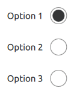

RadioDelegate QML Type
Exclusive item delegate with a radio indicator that can be toggled on or off. More...
| Import Statement: | import QtQuick.Controls |
| Inherits: |
Detailed Description

RadioDelegate presents an item delegate that can be toggled on (checked) or off (unchecked). Radio delegates are typically used to select one option from a set of options.
RadioDelegate inherits its API from ItemDelegate, which is inherited from AbstractButton. For instance, you can set text, and react to clicks using the AbstractButton API. The state of the radio delegate can be set with the checked property.
Radio delegates are auto-exclusive by default. Only one delegate can be checked at any time amongst radio delegates that belong to the same parent item; checking another delegate automatically unchecks the previously checked one. For radio delegates that do not share a common parent, ButtonGroup can be used to manage exclusivity.
RadioButton is similar to RadioDelegate, except that it is typically not used in views, but rather when there are only a few options, and often with the requirement that each button is uniquely identifiable.
ButtonGroup {
id: buttonGroup
}
ListView {
model: ["Option 1", "Option 2", "Option 3"]
delegate: RadioDelegate {
text: modelData
checked: index == 0
ButtonGroup.group: buttonGroup
}
}
See also Customizing RadioDelegate, Delegate Controls, and RadioButton.